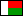

|
|
|
 |  |
| Entrée | 1 lakozia |
| Partie du discours | 2 nom |
| Vocabulaire |
3 Economie: alimentation |
| Explications en malgache |
4 Trano fanaovana nahandro: Tsy miala ao an-dakozia foana io saka io [1.1] |
| Explications en français |
5 cuisine [1.3] |
| Morphologie |
|
| Mis à jour le 2020/07/31 |